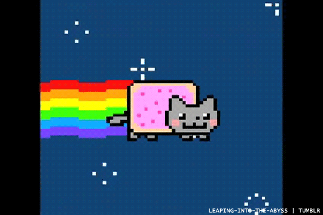

<img src="images/giphy.gif" alt="animation en boucle en 16 couleurs d'un chat gris aux joues roses et au corps rectangulaire, volant dans l'espace laissant une trainée arc-en-ciel">

Animation Flash
<object type="application/x-shockwave-flash" data="medias/jetpackSWF.swf" >
<param name="movie" value="medias/jetpackSWF.swf" />
<param name="wmode" value="transparent" />
<p>un personnage en combinaison spatiale s'envole grâce à 2 mini-fusées accrochées dans son dos</p>
</object>
Contenu incorporé : animation Flash avec une vidéo Youtube alternative (support très relatif, balise noembed obsolète et non-standard)
<embed src="medias/jetpackSWF.swf">
<noembed>
<iframe src="https://www.youtube.com/embed/A69bMuxksKw" title="Vidéo Youtube : Animation JetPack" allow="accelerometer; autoplay; clipboard-write; encrypted-media; gyroscope; picture-in-picture" allowfullscreen></iframe>
<p>un personnage en combinaison spatiale s'envole grâce à 2 mini-fusées accrochées dans son dos</p>
</noembed>
</embed>
§ Exemple de média temporel avec titre, sous-titrage et transcription textuelle
Une boule est en rotation, formant un cercle parfait.
Chaque fois qu'elle atteint l'extrémité haute, basse, droite et gauche du cercle, une flèche rouge apparaît à cette extrémité. Cette flèche rouge est orientée la pointe vers le centre du cercle.